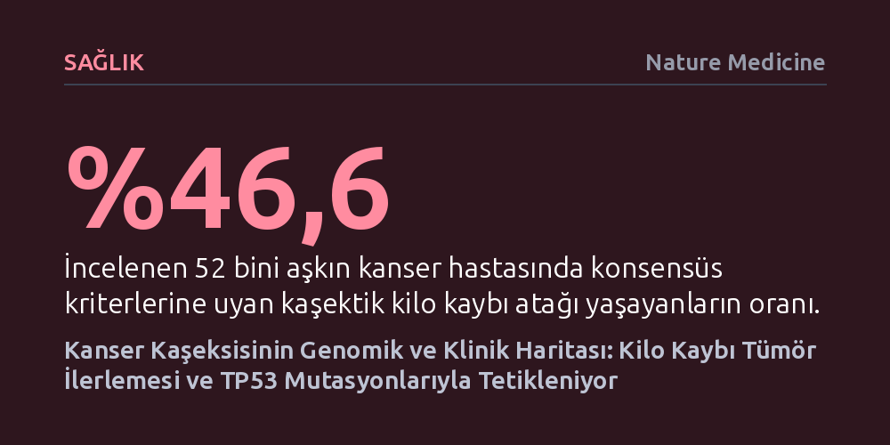

SAGLIK · Nature Medicine · 2026-10-13
52 binden fazla kanser hastasının incelendiği kapsamlı araştırma, kaşeksinin sadece son evrede değil, tümörün ilerleme dönemlerinde ve özellikle TP53 mutasyonu taşıyanlarda sistematik olarak tetiklendiğini ortaya koydu. Kilo kaybı dönemlerine albümin düşüşü ve karaciğer enzimlerinin yükselmesi gibi ortak biyokimyasal bozulmalar eşlik ediyor.
Kanser hastalarındaki aşırı kilo ve kas kaybının çaresiz bir son evre sonucu değil, tümör genetiğiyle ilişkili ve erken dönemde rutin kan değerlerinden öngörülebilen aktif bir sistemik süreç olduğunu gösteriyor.

Kanser hastalarında görülen kilo kaybı, sıklıkla kemoterapinin getirdiği iştahsızlık veya geçici bir zayıflama olarak değerlendirilir. Oysa tıp literatüründe kaşeksi olarak adlandırılan durum; vücudun iskelet kaslarını ve yağ depolarını hızla eriten, bağışıklık dengesini bozan ve sıradan beslenme takviyeleriyle geri döndürülemeyen ağır bir metabolik sendromdur. Bugüne kadar kaşeksinin çoğunlukla ölümün yaklaştığı son evrelerin kaçınılmaz bir tablosu olduğu düşünülüyordu; çünkü insanlardaki klinik seyri geniş kohortlarda standartlaştırılmış yöntemlerle takip edilememişti.
Memorial Sloan Kettering Kanser Merkezi bünyesindeki 52 binden fazla hastanın 1,7 milyonu aşkın vücut kitle indeksi ölçümünü geriye dönük inceleyen bu yeni çalışma, söz konusu ezberi kökten sarsıyor. Veriler, hastaların yüzde 46,6'sının tedavi süreçleri boyunca en az bir kez klinik kaşeksi kriterlerini karşılayan belirgin bir kilo kaybı atağı yaşadığını ortaya koyuyor. Üstelik bu kayıp sadece son evreye özgü değil; evre I ila III arasındaki erken evre ve henüz tedavi almamış hastaların neredeyse dörtte biri, tanı konulduktan sonraki ilk altı ay içinde ciddi bir kilo kaybı atağına giriyor.
Araştırmayı önceki çalışmalardan ayıran en temel metodolojik yenilik, kilo kaybını tek bir zaman dilimindeki sabit tartı sonucu olarak değil, zamana yayılan ataklar halinde modellemesi oldu. Geliştirilen algoritma; hastanın altı aylık bir pencerede vücut ağırlığının en az yüzde 5'ini (veya düşük kilolularda yüzde 2'sini) kaybettiği zaman dilimlerini tek tek haritalandırdı. Bu harita, radyolojik olarak doğrulanmış 212 bini aşkın tümör ilerleme olayıyla eşleştirildiğinde çarpıcı bir örüntü belirdi: Glioblastom haricindeki 17 farklı kanser türünün tamamında, tümörün ilerlediği dönemler ile hastanın hızlı kilo kaybettiği dönemler istatistiksel olarak üst üste biniyor.
Bilgisayarlı tomografi taramalarıyla gerçekleştirilen doku analizleri, bu tablonun su kaybından ibaret olmadığını, hem deri altı hem de iç organ çevresindeki yağ dokularında yüzde 20'yi aşan doğrudan bir erimeye karşılık geldiğini gösterdi. Bir kilo kaybı atağının başlaması hastaların yaşam beklentisini de dramatik biçimde aşağı çekiyor. Zaman bağımlı analizlerde atağın başlamasıyla birlikte ölüm riski tüm kanser türlerinde katlanırken, prostat kanserinde bu artış 11 katı aşıyor.
Araştırmanın bir diğer önemli bulgusu, kanser türü ne olursa olsun kilo kaybı atağı sırasında kandaki biyobelirteçlerin neredeyse aynı uyarı sinyallerini vermesi oldu. Otuz farklı rutin kan parametresini inceleyen araştırmacılar; albümin ve hemoglobin düzeylerinin tutarlı biçimde gerilediğini, buna karşılık karaciğer stres enzimleri ile sistemik iltihap göstergelerinin (nötrofil/lenfosit oranı ve CRP gibi) hızla yükseldiğini belirledi. En kritik nokta ise, bu dalgalanmaların çoğu zaman laboratuvarların 'normal' kabul ettiği klinik referans aralıkları içinde kalarak gerçekleşmesi; yani standart rutin kontrollerde kolaylıkla gözden kaçabilmesi.
Kilo kaybının ardındaki biyolojik mekanizmayı aydınlatmak için tümör DNA dizilemelerine bakan ekip, somatik mutasyonlar ile kilo kaybı riski arasında doğrudan nedensel bağlar yakaladı. Hücre bölünmesini denetleyen temel tümör baskılayıcı olan TP53 genindeki mutasyonlar; meme, akciğer ve prostat dahil dokuz farklı kanser türünde kaşeksi atağı riskini belirgin şekilde artırıyor. Kolorektal kanserde TP53, SMAD4 ve KRAS mutasyonları metabolik yıkımı hızlandırırken, KMT2B gibi bazı gen mutasyonlarının ise koruyucu bir etki sergilediği saptandı.
Kaşeksi uzun yıllar boyunca kanser tedavisinin kaçınılmaz ve müdahale edilemez bir sonucu sayılarak geri plana itilmişti. Ancak bu çalışma, ek ve pahalı moleküler testlere ihtiyaç duymaksızın, hastanelerin rutin olarak topladığı kan tahlilleri, kilo kayıtları ve genetik profillerin birleştirilmesiyle kaşeksi riskinin önceden öngörülebileceğini gösteriyor. Araştırmacılar geliştirdikleri çok değişkenli risk tahmin modelini, Dana-Farber Kanser Enstitüsü'nden bağımsız 5.785 kişilik bir hasta grubunda başarıyla doğrulayarak yaklaşımın klinik geçerliliğini kanıtladı.
Elde edilen sonuçlar, onkolojideki tedavi yaklaşımının genişlemesi gerektiğine işaret ediyor. Yalnızca tümörün küçülmesine odaklanmak yerine, tümörün tetiklediği sistemik metabolik çöküşü erkenden fark edip durdurmak, hastaların tedaviye toleransını ve doğrudan hayatta kalma şansını artırabilir. Kaşeksi artık geç kalındığında fark edilen bir tükeniş tablosu değil, genetik arka planı ve kan biyobelirteçleriyle erken evrede hedeflenebilecek somut bir klinik tablo haline geliyor.